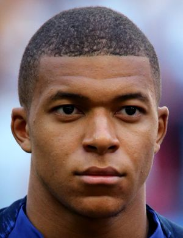
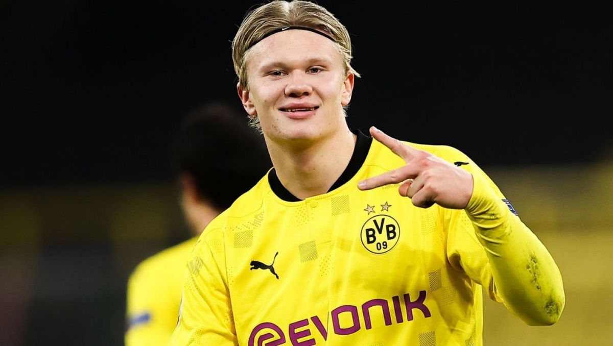
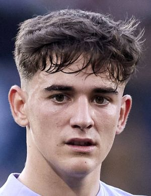

FOTBALL YOUNG STARS
Kylian Mbappe

Francuski piłkarz, urodzony 20 grudnua 1998 ,
występujący na pozycji napastnika we
francuskim klubie Paris Saint-Germain oraz w reprezentacj
Francji. Złoty medalista Mistrzostw Świata 2018 i
Mistrzostw Europy U-19 2016.Pomimo
swojego młodego wieku zdołał strzelić już 300 bramek
w swojej i karierze i jest na najlepszej drodze,
by zostać najlepszym strzelcem w historii futbolu.
Erling Haaland

Urodzony 21 lipca 2000 roku,
zawodnik BVB i reprezenatcji Norwegii. Imponuje
świetną szybkościa, siłą i zabójcze
skutecznym wykończeniem. Niestety
jedną z barier rozwoju, jego imoponującej już
kariery, mogą być kontuzje, które nieprzerwanie
nawracają przez ostatnie 2 lata.
Prosperuje na jedengo z najlepszych napastników
w historii futbolu, jednakże żeby tego
dokonać musi skupić sie na
poprawie paru fundamentalnych aspektach w piłce nożnej.
Gavi

Urodzony. 5 sierpnia 2004 w Los Palacios y Villafranca
hiszpański piłkarz, występujący na pozycji pomocnika
w hiszpańskim klubie FC Barcelona oraz w reprezentacji Hiszpanii.
Jest bardzo zwinny, świetny technicznie, ale nie można mu odmówić,
również świetnego agresywnego przechwytu. Swoją grą
przypomina legende hiszpańskiej piłki Andresa Inieste
Ziemowit Maciejewski